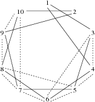

|
| Contest: USAICO10-1A GOLD Division |
|
| Your proctor is Rob Kolstad |
|
|
ANALYSIS MODE
Submit solutions for your own enjoyment.
**********************************************************************
GOLD PROBLEMS
**********************************************************************
Three problems numbered 1 through 3
**********************************************************************
Problem 1: Apple Catching [Jelle van den Hooff, 2010]
Farmer John is collecting apples in his orchard that is modelled
as a straight line whose length does not exceed 100,000 meters.
Trees can be found at various integer locations along this line.
At time t=0, FJ strolls through the orchard entrance at x=0 with
the singular idea that he wants to harvest apples by catching them
as they fall from the trees.
Apples only rarely fall to the ground, and FJ wants lots of apples.
Luckily, he knows precisely when each of the N (1 <= N <= 100,000)
conveniently numbered apples to be harvested is going to fall. Apple
i falls from its tree at distance D_i (1 <= D_i <= 100,000) meters
from the orchard entrance exactly T_i (1 <= T_i <= 100,000,000)
seconds after FJ enters the orchard.
FJ walks at a maximum speed of 1 meter per second and catches an
apple if he is standing below it as it falls from the tree. FJ can
catch multiple apples at once if they happen to fall from the same
tree at the same time.
FJ, used to living with thousand of cows and even more pastures has
no trouble running around virtually forever. If he is willing to
wait until the last apple has fallen, how many apples can he catch?
Suppose seven apples are to fall according to this table (whose
columns are tree location followed by apple-fall-time):
1 19 7 9
2 7 8 10
3 5 11 1
12 4
This illustration depicts one way FJ can catch four apples -- the
maximum he can catch:
Tree dist: 1 2 3 4 5 6 7 8 9 10 11 12
Drop time: 19 7 5 9 10 1 4
Apples: ----*---*---*---------------*---*-----------*---*
FJ walking times (with apple-catching marked as '<'):
0...1...2...3
4
5<..6...7...8...9<.10<
17..16..15..14..13..12..11..
18
19<
PROBLEM NAME: acatch
INPUT FORMAT:
* Line 1: A single integer: N
* Lines 2..N+1: Line i+1 contains two space-separated integers: D_i
and T_i
SAMPLE INPUT (file acatch.in):
7
3 5
8 10
2 7
1 19
11 1
7 9
12 4
OUTPUT FORMAT:
* Line 1: The maximum number of apples FJ can catch
SAMPLE OUTPUT (file acatch.out):
4
**********************************************************************
Problem 2: Lazy Cows [POI, 2010]
Farmer John has N (1 <= N <= 40,000) pastures in which the cows
graze. A total of M unit-length bidirectional paths (1 <= M <=
1,000,000) connect pairs of these pastures.
FJ is worried that Bessie is simply not getting enough exercise.
He knows she always grazes at pasture 1 for an hour and then walks
to pasture 2. He wants her to have enough exercise and notes that
the distance between pastures 1 and 2 is at least 5.
FJ wants to add a huge number of unit-length paths that connect
pairs of pastures. What is the maximum number of paths he can add
and still ensure that Bessie must traverse at least 5 paths to move
from pasture 1 to pasture 2?
Consider the layout of pastures and paths below, which matches the input
data. The solid lines represent the initial unit-lengths paths while the
dashed lines show one of the largest possible sets of paths that can be
added:

Initially, Bessie has two possible routes from pasture 1 to pasture
2: 1-3-5-7-9-2 and 1-4-6-8-10-2. FJ can add ten paths to this map
and still keep the minimum distance between pastures 1 and 2 at
least 5.
The input file specifies a unit path by naming the two pastures it
connects: p_i1 and p_i2 (1 <= p_i1 <= N; 1 <= p_i2 <= N; p_i1 !=
p_i2).
TIME LIMIT: 2 seconds
PROBLEM NAME: lazycows
INPUT FORMAT:
* Line 1: Two space-separated integers: N and M
* Lines 2..M+1: Two space-separated integers: p_i1 and p_i2
SAMPLE INPUT (file lazycows.in):
10 10
1 3
3 5
5 7
7 9
2 9
1 4
4 6
6 8
8 10
2 10
OUTPUT FORMAT:
* Line 1: A single integer, the maximum number of paths that may be
added so that the distance from pasture 1 to pasture 2 is at
least 5.
SAMPLE OUTPUT (file lazycows.out):
10
**********************************************************************
Problem 3: Those Old Maps [Jacob Steinhardt, 2010]
The Farm comprises N (1 <= N <= 10,000) pastures connected by N-1
bidirectional roads such that every pair of pastures is connected
by a sequence of one or more roads.
The Farm is so big that, over the years, its owners (including
Farmer John) have created multiple different maps of it, often with
differing place names as they evolved over time.
FJ has discovered a cache of T (2 <= T <= 10) Farm maps in his
attic. He is curious to know which sets of maps describe the same
set of pastures and roads on the Farm.
Determine which sets of maps describe the same farm layout. Two
maps describe the same farm layout if it is possible to relabel the
vertices of one to end up with the other.
Each road is described by a pair of differing integers e1 and e2
(1 <= e1 <= N; 1 <= e2 <= N) that names the endpoints it connects.
While each map has pastures numbered 1..N, it is likely that the
pasture numbers in one map do not correspond at all to pasture
numbers in any other map.
Consider these three maps:
Map 1 Map 2 Map 3
2---1 4 1--4
\ | \
5--4 1---2--5 2
/ | |
3 3 3
|
5
See the sample input sequence for their representation.
Maps 1 and 2 describe the same farm layout; map 3 is different. One
possible mapping of vertices between trees 1 and 2 is:
T1 <-> T2
2 3
1 5
5 2
3 1
4 4
TIME LIMIT: 2 seconds
PROBLEM NAME: maps
INPUT FORMAT:
* Line 1: Two space-separated integers: T and N
* Lines 2..T*N-T+1: Two space-separated integers: e1 and e2.
The set of lines contains T sequences of N-1 lines. Lines 2 through
N correspond to tree 1, N+1 through 2N-1 correspond to tree 2, 2N
through 3N-2 correspond to tree 3, etc.
SAMPLE INPUT (file maps.in):
3 5
2 1
1 5
5 3
4 5
4 2
1 2
2 5
5 3
4 1
4 2
2 3
3 5
OUTPUT FORMAT:
* Lines 1..T: Line i contains the set of maps that describe the same
farm layout as map i, in increasing order (including i itself)
SAMPLE OUTPUT (file maps.out):
1 2
1 2
3
**********************************************************************